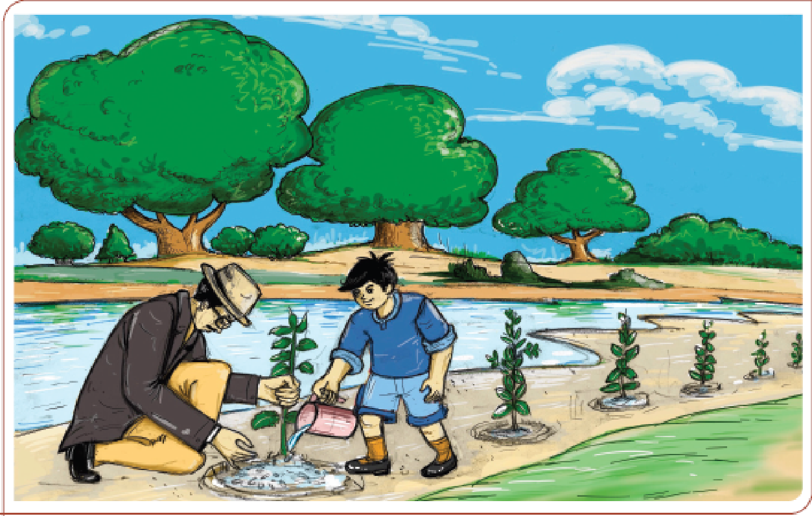

The description of the picture is begins

The picture of grandson watering plants with his grandfather in river bank. Many trees under a cloudy sky are given.
The description of the picture is ends
Grandfather wasn't content with growing trees in our compound. During the rains, he would walk into the jungle beyond the river-bed armed with cuttings and saplings which he would plant in the forest.
'But no one ever comes here!' I had protested, the first time we did this. 'Who's going to see them?'
'See, we're not planting them simply to improve the view,' replied Grandfather. 'We're planting them for the forest and for the animals and birds who live here and need more food and shelter.'
‘Of course, men need trees too,’ he added, ‘To keep the desert away, to attract rain, to prevent the banks of rivers from being washed away, for fruit and flowers, leaf and seed. Yes, for timber too. But men are cutting down trees without replacing them and if we don’t plant a few trees ourselves, a time will come when the world will be one great desert
The thought of a world without trees became a sort of nightmare to me and I helped Grandfather in his tree-planting with greater enthusiasm. And while we went about our work, he taught me a poem by George Morris:
Woodman, spare that tree!
Touch not a single bough!
In youth it sheltered me,
And I'll protect it now.
‘One day the trees will move again,’ said Grandfather. 'They’ve been standing still for thousands of years but there was a time when they could walk about like people. Then along came an interfering busybody who cast a spell over them, rooting them to one place. But they’re always trying to move. See how they reach out with their arms! And some of them, like the banyan tree with its travelling aerial roots, manage to get quite far.’ We found an island, a small rocky island in a dry river-bed. It was one of those river-beds so common in the foothills, which are completely dry in summer but flooded during the monsoon rains. A small mango tree was growing on the island. ‘If a small tree can grow here.’ said Grandfather, ‘so can others.’ As soon as the rains set in and while rivers could still be crossed, we set out with a number of tamarind, laburnum, and coral tree saplings and cuttings and spent the day planting them on the island.
The Western Ghats is home to nearly 325 globally - threatened flora and fauna.
1. Why do we need trees? List four reasons that Grandfather gives.
2. Why did the author help his Grandfather plant trees?
3. What made Grandfather plant saplings on the rocky island?
protested - opposed or disagreed
nightmare - a frightening dream
interfering - stopping